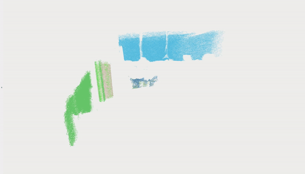
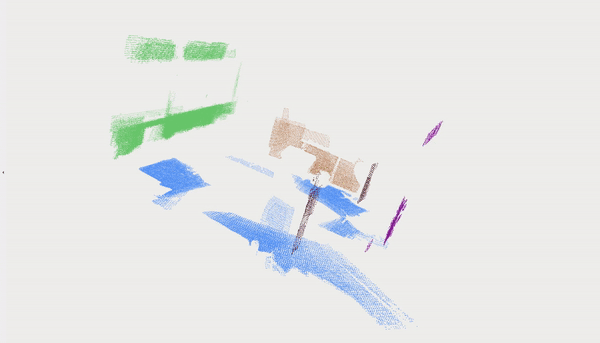
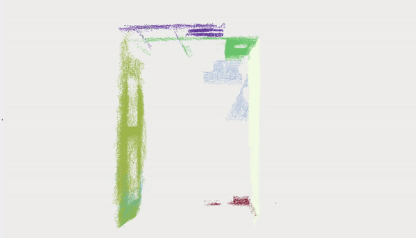
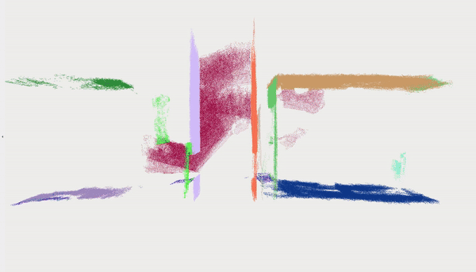
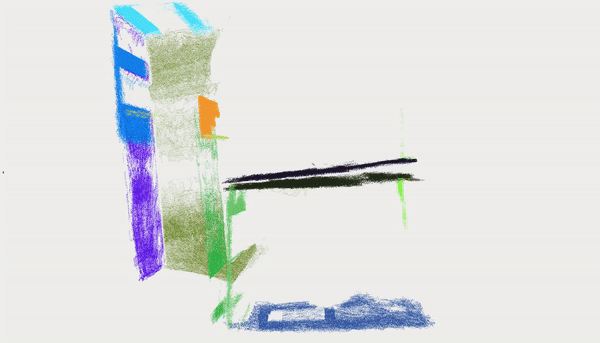

📊 Evaluations
📈 Absolute Trajectory Error (ATE)
Below table shows the performance of vS-Graphs on different datasets and compared to the state-of-the-art methods. It is measured using ATE reported in meters. For evaluation, each system was evaluated over eight runs on dataset instances.
📍 Mapping Performance
Analyzing the accuracy of the reconstructed maps against the ground truch across eight iterations shows that vS-Graphs performs more robost compared to its baseline, ORB-SLAM 3.0. The performance is measured using Root Mean Square Error (RMSE) reported in meters. vS-Graphs achieves superior performance in terms of RMSE, despite generating maps with around 10.15% fewer points (on average).


🖼️ Scene Understanding Performance
Below evaluations show the performance of vS-Graphs in terms of scene understanding. The results are presented in the form of reconstructed maps enriched with building components (i.e., walls and ground surfaces). These building components are later used to infer the structural elements of the environment (i.e., rooms and corridors).
💡 I. Scene Understanding Accuracy
Table
🧱 Building Components Recognition
Text
ICL Dataset - Sequence deer_mav_fast

ICL Dataset - Sequence deer_mav_fast

ICL Dataset - Sequence deer_mav_fast

ICL Dataset - Sequence deer_mav_fast

OpenLoris Dataset - Sequence office1-2
TUM-RGBD Dataset - Sequence frb1_room
AutoSense Dataset - Seq05
AutoSense Dataset - Seq06
AutoSense Dataset - Seq07
AutoSense Dataset - Seq08

🏠 Scene Graphs with Structural Elements
Text

⏱️ Runtime Analysis
Text